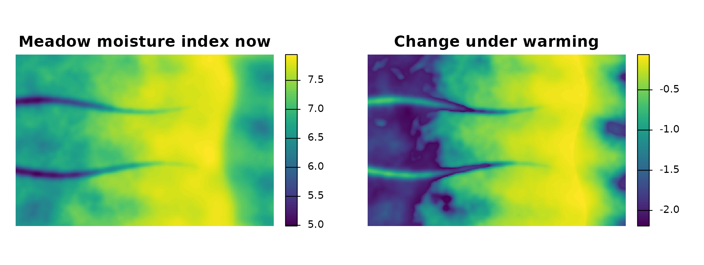
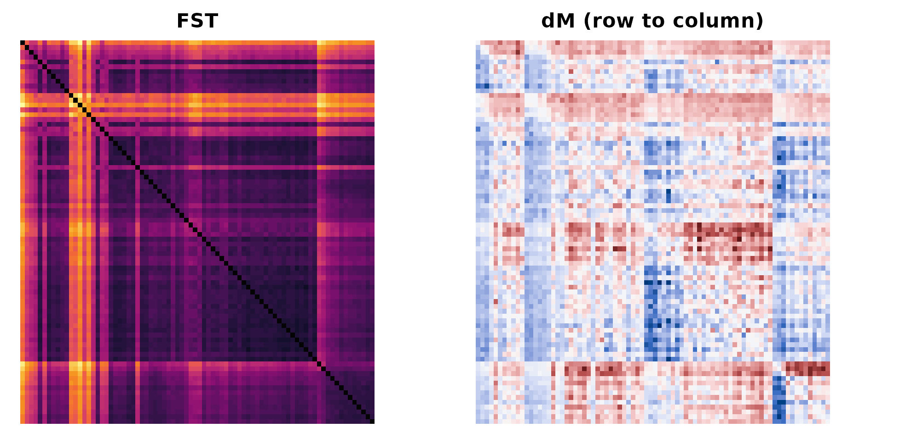
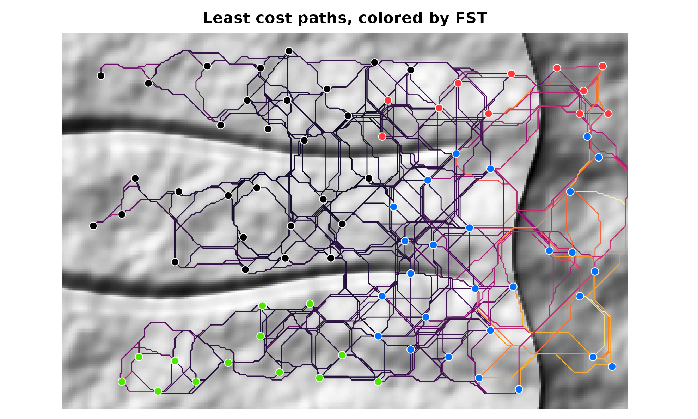
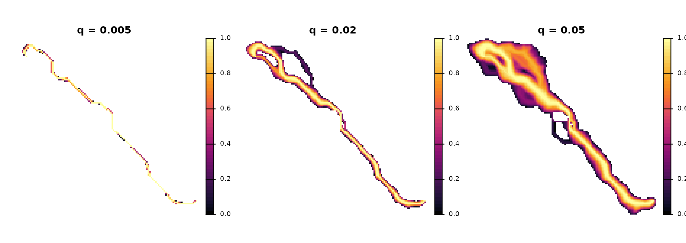
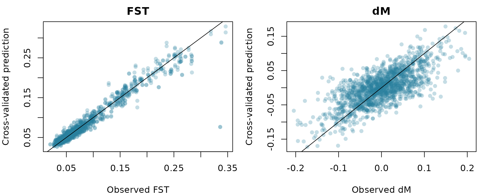
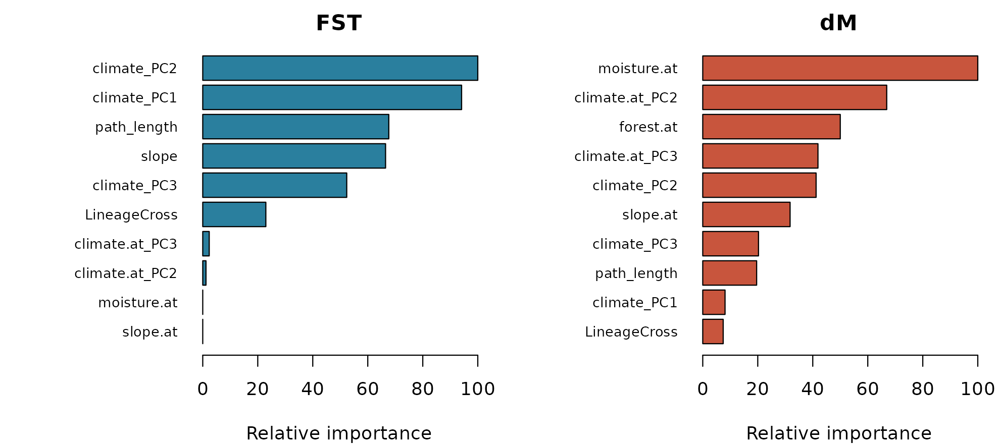
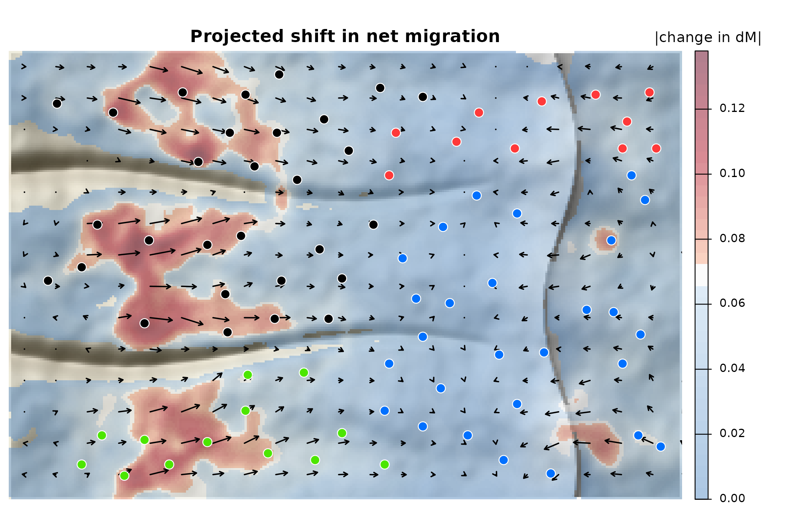
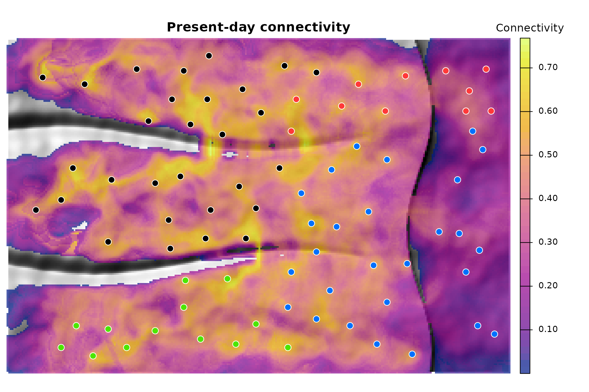

Full tutorial: from genotypes to a map of genetic range shifts
Source:vignettes/articles/tutorial.Rmd
tutorial.RmdThis tutorial walks through the full corridoR workflow, step by step, on a simulated mountain range. It follows the six steps of the analysis in Maier et al. (2022, Heredity), which forecast upslope range shifts in the Yosemite toad. The same steps are shown on the real toad data in the Yosemite toad tutorial. The full run takes about 15 minutes on a laptop; most of that is step 3.
The simulated range
The example range is modeled loosely on the central Sierra Nevada. A long, gradual western slope rises from foothills at about 1000 m to a crest above 3400 m near the eastern edge. East of the crest the ground falls away steeply into a rain shadow. Two river canyons cut the western slope, with walls steep enough to block movement except near their heads.
Eighty meadows are sampled, 12 snowmelt-dependent toads in each. They belong to four lineages: West and South at low elevation on either side of the southern canyon, and North and East at high elevation. Lineages at the same elevation share their environment but not their history.

The simulation behind the genetic data works like this. Toads move most easily over gentle, forested ground. Migrants leave a meadow for wetter neighbors, and the drier their own meadow, the stronger that pull. Under the warming scenario (+4.2 C), snowpack shrinks by a share that falls with elevation, from about 90% in the foothills to under 20% at the crest, as in climate projections for Yosemite. Low meadows dry out the most, so the push uphill grows most at low elevation. The task is to recover that pattern from genotypes and landscape data alone.
ex <- corridor_example(acc = TRUE)
names(ex)
#> [1] "dem" "resistance" "resistance_slope" "resistance_cover"
#> [5] "lineage_tmrca" "env" "env_future" "sites"
#> [9] "files" "acc"
ex$sites
#> Simple feature collection with 80 features and 3 fields
#> Geometry type: POINT
#> Dimension: XY
#> Bounding box: xmin: 3500 ymin: 2100 xmax: 58100 ymax: 37900
#> Projected CRS: +proj=tmerc +lat_0=0 +lon_0=0 +k=1 +x_0=0 +y_0=0 +ellps=WGS84 +units=m +no_defs
#> First 10 features:
#> site elevation lineage geom
#> 1 M01 1070 West POINT (3500 19500)
#> 2 M02 1184 West POINT (4300 35300)
#> 3 M03 1031 West POINT (6500 20700)
#> 4 M04 1006 South POINT (6500 3100)
#> 5 M05 1266 West POINT (7900 24500)
#> 6 M06 1050 South POINT (8300 5700)
#> 7 M07 1337 West POINT (9300 34500)
#> 8 M08 1322 South POINT (10300 2100)
#> 9 M09 1389 South POINT (12100 5300)
#> 10 M10 1359 West POINT (12100 15700)ex$env and ex$env_future hold the
environmental layers now and under warming. The change in meadow
moisture is largest in the foothills and fades toward the crest:
plot(c(ex$env$moisture, ex$env_future$moisture - ex$env$moisture),
main = c("Meadow moisture index now", "Change under warming"),
axes = FALSE, mar = c(1, 1, 2, 5))
Step 1. Genetic differentiation and the direction of migration
read_genotypes() reads STRUCTURE, GENEPOP, VCF, GenAlEx,
FSTAT and PLINK files and returns allele counts per population.
as_popcounts() does the same for adegenet and
vcfR objects. The example ships the same SNPs in three
formats:
pc <- read_genotypes(ex$files$structure)
pc
#> <popcounts> 80 populations, 1318 loci (2 alleles per locus)
#> individuals per population: 8-8
#> populations: M01, M02, M03, M04, M05, M06, M07, M08 ...
pc_vcf <- read_genotypes(ex$files$vcf, pop = ex$files$popmap) # VCF needs a population map
all.equal(pairwise_fst(pc), pairwise_fst(pc_vcf))
#> [1] TRUEPairwise FST measures differentiation. Directional GST (Sundqvist et
al. 2016, as in diveRsity::divMigrate) estimates relative
migration in each direction from a hypothetical gene pool shared by each
pair; the difference, emigration minus immigration, is dM. Positive dM
means the source sends more migrants than it receives.
fst <- pairwise_fst(pc)
dg <- directional_gst(pc)
gen <- pairwise_table(fst, dg$dM)
head(gen)
#> from to fst dM
#> 1 M02 M01 0.16311080 0.038685611
#> 2 M03 M01 0.15357827 0.004226984
#> 3 M04 M01 0.23965549 0.011150260
#> 4 M05 M01 0.08890528 -0.088469572
#> 5 M06 M01 0.22114611 0.013136436
#> 6 M07 M01 0.13162280 -0.027356787Ordering the matrices by lineage shows the structure:
ord <- order(match(ex$sites$lineage, c("North", "East", "West", "South")), ex$sites$elevation)
ids <- ex$sites$site[ord]
op <- par(mfrow = c(1, 2), mar = c(1, 1, 2, 4))
image(t(fst[rev(ids), ids]), axes = FALSE, col = hcl.colors(50, "Inferno"), main = "FST")
lim <- max(abs(dg$dM), na.rm = TRUE)
image(t(dg$dM[rev(ids), ids]), axes = FALSE, zlim = c(-lim, lim),
col = hcl.colors(50, "Blue-Red 3"), main = "dM (row to column)")
par(op)Step 2. Choosing the most likely migration paths
Corridors start from a resistance surface. In the paper,
ResistanceGA optimized the resistance of slope and of
vegetation moisture, and eleven blends of the two were compared. The
example includes both components, so we can do the same. For each blend,
make_transition() builds the conductance layer (ridgelines
and canyon walls at resistance 1e6 cannot be crossed), and
gdistance::costDistance() gives the cost of the cheapest
route between each pair of meadows.
xy <- st_coordinates(ex$sites); rownames(xy) <- ex$sites$site
pairs <- as.data.frame(t(combn(ex$sites$site, 2))); names(pairs) <- c("from", "to")
pairs <- pairs[sqrt(rowSums((xy[pairs$from, ] - xy[pairs$to, ])^2)) < 15000, ]
nrow(pairs)
#> [1] 763
blend <- function(w) {
r <- w * ex$resistance_slope + (1 - w) * ex$resistance_cover
r[ex$resistance_slope >= 1e6] <- 1e6
r
}
cost_dist <- function(r) {
cd <- as.matrix(gdistance::costDistance(make_transition(r, barrier = 1e6), xy))
dimnames(cd) <- list(rownames(xy), rownames(xy))
cd[cbind(pairs$from, pairs$to)]
}
weights <- seq(0, 1, by = 0.2)
dists <- sapply(weights, function(w) cost_dist(blend(w)))
colnames(dists) <- paste0("slope_", weights)
dists <- cbind(dists, straight_line = sqrt(rowSums((xy[pairs$from, ] - xy[pairs$to, ])^2)))Each hypothesis is ranked by a mixed model of FST on (scaled) distance, with source and destination meadow as random effects:
d <- data.frame(pairs, fst = fst[cbind(pairs$from, pairs$to)], scale(dists))
rank <- sapply(colnames(dists), function(h) {
fit <- lme4::lmer(as.formula(paste("fst ~", h, "+ (1 | from) + (1 | to)")), data = d, REML = FALSE)
c(logLik = as.numeric(logLik(fit)), AIC = AIC(fit))
})
round(t(rank)[order(-rank["logLik", ]), ], 1)
#> logLik AIC
#> slope_1 2289.0 -4568.0
#> slope_0.8 2275.2 -4540.4
#> slope_0.6 2249.4 -4488.9
#> slope_0.4 2214.4 -4418.8
#> slope_0.2 2170.2 -4330.5
#> slope_0 2121.5 -4233.0
#> straight_line 2115.3 -4220.7Slope-heavy hypotheses fit best: pure slope ranks first, just ahead
of the 80:20 blend the simulation used, and every path model beats
straight-line distance. We continue with ex$resistance,
that 80:20 blend, and draw the least cost paths. Path length is measured
over the terrain surface.
tr <- make_transition(ex$resistance, barrier = 1e6)
paths <- least_cost_paths(tr, ex$sites, pairs = pairs, dem = ex$dem)
paths$fst <- fst[cbind(paths$from, paths$to)]
lc <- c(North = "#ff3939", East = "#0070ff", West = "#000000", South = "#4ce600")
hill <- shade(terrain(ex$dem * 3, "slope", unit = "radians"), terrain(ex$dem, "aspect", unit = "radians"), 35, 315)
plot(hill, col = grey(0:100 / 100), legend = FALSE, axes = FALSE, mar = c(0.5, 0.5, 2, 1),
main = "Least cost paths, colored by FST")
pc_col <- hcl.colors(50, "Inferno")[cut(paths$fst, 50)]
plot(st_geometry(paths), col = pc_col, lwd = 1.2, add = TRUE)
plot(st_geometry(ex$sites), pch = 21, bg = lc[ex$sites$lineage], col = "white", cex = 1.3, add = TRUE)
Step 3. Corridors and environmental extraction
A toad does not walk a one-pixel line. A least cost corridor keeps
the cheapest share q of the landscape between two meadows
and weights each kept cell from 1 on the best route to 0 at the corridor
edge:
w <- lcc_weights(ex$acc, "M20", "M60", q = c(0.005, 0.02, 0.05))
plot(trim(w), col = hcl.colors(50, "Inferno"), axes = FALSE, nc = 3,
main = c("q = 0.005", "q = 0.02", "q = 0.05"))
corridor_extract() summarizes every environmental layer
inside every corridor, weighting cells by corridor weight; with path
buffers it uses the share of each cell inside the buffer. Present and
future layers are extracted together. We try three bandwidths: a 400 m
buffer and two corridor widths.
both <- c(ex$env, ex$env_future)
names(both) <- c(names(ex$env), paste0(names(ex$env), "_f"))
bands <- list(
lcp_400m = corridor_extract(both, pairs, buffers = path_buffers(paths, 400)[[1]], progress = FALSE),
lcc_0.01 = corridor_extract(both, pairs, acc = ex$acc, q = 0.01, progress = FALSE),
lcc_0.05 = corridor_extract(both, pairs, acc = ex$acc, q = 0.05, progress = FALSE)
)
head(bands$lcc_0.05[, 1:6])
#> from to snowpack runoff moisture summer_temp
#> 1 M01 M03 404.5949 303.7365 6.580613 26.32584
#> 2 M01 M05 448.9926 327.0718 6.666222 25.87754
#> 3 M01 M06 650.3694 442.9360 6.954292 23.25507
#> 4 M01 M10 463.5224 330.3576 6.692418 25.43482
#> 5 M01 M11 471.0468 337.0674 6.706028 25.53177
#> 6 M01 M16 544.0001 379.0492 6.822005 24.72180Step 4. A bandwidth for each group of features
Climate may act over a broad swath of landscape, while slope matters
right along the route. select_bandwidth() fits a random
forest of FST on each feature group under each bandwidth and keeps the
one with the lowest cross-validated error.
groups <- list(climate = c("snowpack", "runoff", "summer_temp"), wetness = "moisture",
terrain = "slope", cover = "forest")
sel <- select_bandwidth(bands, fst[cbind(pairs$from, pairs$to)], groups, num.trees = 300)
sel
#> group bandwidth mtry min.node.size RMSE Rsquared
#> 1 climate lcp_400m 1 5 0.02672350 0.78889059
#> 2 climate lcc_0.05 2 10 0.02834149 0.75915926
#> 3 climate lcc_0.01 2 10 0.02929042 0.74315211
#> 4 cover lcc_0.05 1 10 0.05683060 0.13809218
#> 5 cover lcp_400m 1 10 0.05761762 0.10563157
#> 6 cover lcc_0.01 1 10 0.05814010 0.08152276
#> 7 terrain lcc_0.05 1 10 0.04135029 0.50222774
#> 8 terrain lcc_0.01 1 10 0.05159779 0.25553573
#> 9 terrain lcp_400m 1 10 0.05387279 0.20111673
#> 10 wetness lcp_400m 1 10 0.05490923 0.16303562
#> 11 wetness lcc_0.05 1 10 0.05598479 0.15127696
#> 12 wetness lcc_0.01 1 10 0.05741756 0.12744798
best <- attr(sel, "best")
best
#> climate cover terrain wetness
#> "lcp_400m" "lcc_0.05" "lcc_0.05" "lcp_400m"Step 5. Models of FST and dM
The model data hold one row per directed pair. Corridor
features are the same in both directions, so
both_directions() repeats them.
site_contrast() adds at-site features: the difference
between the source and destination meadow. Path length and the lineage
effect (lineage_cross(): time since two lineages split,
zero within a lineage) go in as they are.
pick <- function(suffix = "") {
out <- pairs
for (g in names(groups)) out[groups[[g]]] <- bands[[best[[g]]]][paste0(groups[[g]], suffix)]
out$path_length <- paths$length
both_directions(out)
}
now <- pick(); future <- pick("_f")
now <- cbind(now, site_contrast(ex$sites, now, env = ex$env)[, -(1:2)])
future <- cbind(future, site_contrast(ex$sites, now, env = ex$env_future)[, -(1:2)])
lin <- st_drop_geometry(ex$sites)[, c("site", "lineage")]
now$LineageCross <- future$LineageCross <- lineage_cross(now$from, now$to, lin, ex$lineage_tmrca)
y <- gen[match(paste(now$from, now$to), paste(gen$from, gen$to)), ]
model_groups <- c(groups, list(climate.at = paste0(groups$climate, ".at")))fit_connectivity() runs a PCA within each feature group,
tunes a Cubist model (rule-based trees with a linear model in every
leaf, which extrapolate better than random forests), drops collinear
features by importance, and refits.
m_fst <- fit_connectivity(now, y$fst, model_groups, committees = c(1, 10, 50), neighbors = c(0, 5))
m_dm <- fit_connectivity(now, y$dM, model_groups, committees = c(1, 10, 50), neighbors = c(0, 5))
m_fst
#> <corridor_model> Cubist, 50 committees, 5 neighbors
#> 12 features after PCA and VIF filtering; CV RMSE 0.01421, R2 0.940
#> most important: climate_PC2 (100), climate_PC1 (94), path_length (68), slope (66), climate_PC3 (52)
m_dm
#> <corridor_model> Cubist, 50 committees, 5 neighbors
#> 12 features after PCA and VIF filtering; CV RMSE 0.04393, R2 0.521
#> most important: moisture.at (100), climate.at_PC2 (67), forest.at (50), climate.at_PC3 (42), climate_PC2 (41)
op <- par(mfrow = c(1, 2), mar = c(4, 4, 2, 1))
plot(m_fst$observed, m_fst$cv_pred, pch = 16, col = "#2a7f9e44", xlab = "Observed FST",
ylab = "Cross-validated prediction", main = "FST"); abline(0, 1)
plot(m_dm$observed, m_dm$cv_pred, pch = 16, col = "#2a7f9e44", xlab = "Observed dM",
ylab = "Cross-validated prediction", main = "dM"); abline(0, 1)
par(op)FST is explained mostly by corridor features and path length, dM mostly by contrasts between meadows, as in the Yosemite toad:
op <- par(mfrow = c(1, 2), mar = c(4, 9, 2, 1))
barplot(rev(head(m_fst$importance, 10)), horiz = TRUE, las = 1, cex.names = 0.75,
col = "#2a7f9e", main = "FST", xlab = "Relative importance")
barplot(rev(head(m_dm$importance, 10)), horiz = TRUE, las = 1, cex.names = 0.75,
col = "#c8553d", main = "dM", xlab = "Relative importance")
par(op)Step 6. Forecasting under climate change
predict() projects future climate onto the present-day
PCA loadings and predicts each pair now and under warming.
change <- data.frame(from = now$from, to = now$to,
fst = predict(m_fst, future) - predict(m_fst, now),
dM = predict(m_dm, future) - predict(m_dm, now))
summary(change[, c("fst", "dM")])
#> fst dM
#> Min. :-0.224821 Min. :-3.781e-01
#> 1st Qu.:-0.008467 1st Qu.:-4.532e-02
#> Median : 0.031226 Median : 7.864e-05
#> Mean : 0.024150 Mean :-1.032e-04
#> 3rd Qu.: 0.054055 3rd Qu.: 4.481e-02
#> Max. : 0.216369 Max. : 3.611e-01map_pairwise() spreads each pair’s change over its
corridor and averages overlapping corridors. For dM it also sums
direction vectors, each pointing from source to destination and weighted
by the size of the change, to give a net direction in every cell.
plot_shift() draws the result: blue where change is small,
red where it is large.
shift <- map_pairwise(data.frame(change[, 1:2], value = change$dM), ex$acc, ex$sites, progress = FALSE)
plot_shift(shift, dem = ex$dem, sites = ex$sites, col_sites = lc[ex$sites$lineage],
main = "Projected shift in net migration", legend_title = "|change in dM|")
The pressure falls on the lowest meadows. On both sides of each canyon, long arrows run east, upslope, from the foothills; they shorten through the middle elevations and all but vanish near the crest, the refuge. East of the crest the arrows turn and climb back west up the escarpment. The canyons stand out as gaps that corridors cannot cross. This is the pattern built into the simulation, recovered from genotypes and landscape data.
The FST model maps present-day connectivity the same way. Scaling predicted FST so that 1 is the best-connected pair, and averaging over corridors, shows corridors of high flow and the pinch points between them:
fst_now <- predict(m_fst, now)
conn <- data.frame(from = now$from, to = now$to, value = (max(fst_now) - fst_now) / diff(range(fst_now)))
conn_map <- map_pairwise(conn, ex$acc, ex$sites, direction = FALSE, absolute = FALSE, progress = FALSE)
plot(hill, col = grey(0:100 / 100), legend = FALSE, axes = FALSE, mar = c(0.5, 0.5, 2, 6),
main = "Present-day connectivity")
plot(conn_map$value, col = hcl.colors(50, "Plasma"), alpha = 0.7, add = TRUE,
plg = list(title = "Connectivity"))
plot(st_geometry(ex$sites), pch = 21, bg = lc[ex$sites$lineage], col = "white", cex = 1.3, add = TRUE)
Using your own data
-
Genotypes: any format
read_genotypes()reads, or matrices of FST and dM from other software. -
Sites: an
sflayer of points or polygons whose ID column matches the population names. -
Resistance: compare a few hypotheses as in step 2,
or optimize them with
ResistanceGA. - Environment: any stack of rasters, with future versions under the same layer names.
-
Lineages: a table of site lineages and a table of
divergence times for
lineage_cross(). -
Scale:
accumulated_cost()can write to disk, and corridors are built one pair at a time, so large landscapes need time rather than memory.
Citation
If you use corridoR, please cite both papers:
Maier PA, Vandergast AG, Ostoja SM, Aguilar A, Bohonak AJ (2022) Landscape genetics of a sub-alpine toad: climate change predicted to induce upward range shifts via asymmetrical migration corridors. Heredity 129:257-272. https://doi.org/10.1038/s41437-022-00561-x
Maier PA (2026) corridoR: Migration corridors and genetic range shifts from landscape genetic data. Journal of Open Source Software (in review).